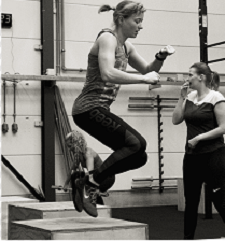
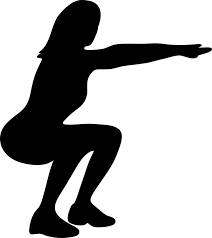
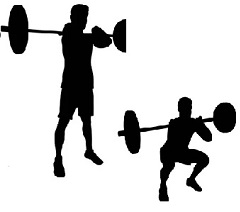
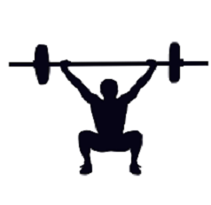
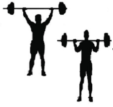
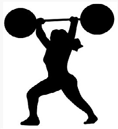
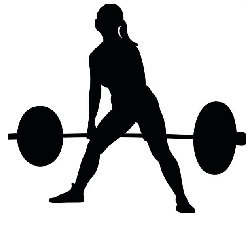
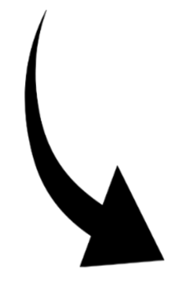

Qué es el CrossFit?
El CrossFit se define como "un sistema de entrenamiento de fuerza y acondicionamiento basado en ejercicios funcionales constantemente variados realizados a una alta intensidad. Tambien se le conoce como: "Técnica de entrenamiento que conecta movimientos de diferentes disciplínas, tales como la halterofilia, el entrenamiento metabólico o el gimnástico. Consiste en acometer un programa de ejercicios (flexiones, tracción, etc), en un tiempo determinado y con un número definido de veces".
Ejercicios Básicos
Estos ejercicios son propios de los cuerpos militares, policiales y de bomberos y están relacionados con movimientos naturales donde destacan las sentadillas y los levantamientos. Muchos entrenamientos incluyen variaciones de sentadillas, flexiónes y levantamiento de pesas que duran un tiempo determinado y sirven para ayudar a desarrollar los músculos.
Pero, por muy variado que sea el deporte de CrossFit, ¿sabes que se construyó en torno a sólo unos cuantos movimientos?
-
Sentadilla al aire
Las sentadillas ayudan a crear una base sólida de fuerza y equilibrio en la parte inferior del cuerpo. Se centran en los muslos, los isquiotibiales, los cuádriceps y los glúteos en particular, ayudándote a añadir masa muscular en estas zonas.
-
Sentadilla frontal
Las sentadillas frontales aumentan la masa muscular en la parte inferior del cuerpo. Lo hacen trabajando los cuádriceps, los glúteos, las caderas y los isquiotibiales. Si tu objetivo es construir unos glúteos perfectos, las sentadillas frontales también pueden ayudarte con ello. También ayudan a fortalecer la columna vertebral.
-
Sentadilla por encima de la cabeza
La sentadilla por encima de la cabeza activa los músculos de la parte superior del cuerpo, como los tríceps y los deltoides, así como los músculos de la parte inferior del cuerpo, incluidos los aductores, los cuádriceps y los músculos de la parte inferior de la espalda.
-
Press de hombros
El press de hombros es uno de los mejores ejercicios para fortalecer los hombros y la parte superior de la espalda. El mayor beneficiario del press de hombros es la porción frontal del músculo del hombro (deltoides anterior), pero también estarás trabajando los deltoides, tríceps, trapecios y pectorales.
-
Push Jerk
El push jerk es un ejercicio para todo el cuerpo que puede ayudar a desarrollar los músculos de todo el cuerpo, incluidos los isquiotibiales, los glúteos, los cuádriceps, las pantorrillas, los tríceps y el núcleo. Las flexiones de brazos mejoran la potencia explosiva.
-
Levantamiento de peso muerto
El levantamiento de peso muerto ayuda a aumentar la fuerza y la estabilidad del core y mejorar la postura. El levantamiento de peso muerto entrena la mayoría de los músculos de las piernas, la zona lumbar y el tronco. Todos ellos son músculos responsables de la postura, lo que ayudará a mantener alineados los hombros, la columna vertebral y las caderas.
Material de apoyo
Si deseas visualizar como realizar algunos ejercicios básicos puedes darle click al video que se encuentra a tu derecha.
